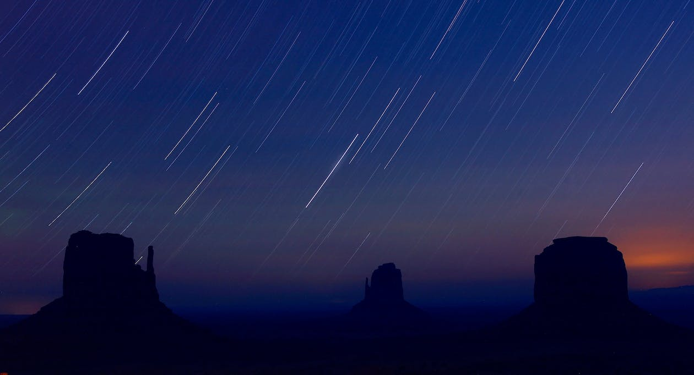

StarGazing

The activity of looking up at the stars and objects in space as a hobby, as part of scientific study, or as part of astrology.
Choose your stargazing site

Let your eyes adapt to darkness

Take time to observe individual stars

Learn the constellations and asterisms

Spot the planets with your naked eye

Observe a meteor shower

See how the stars move across the sky
